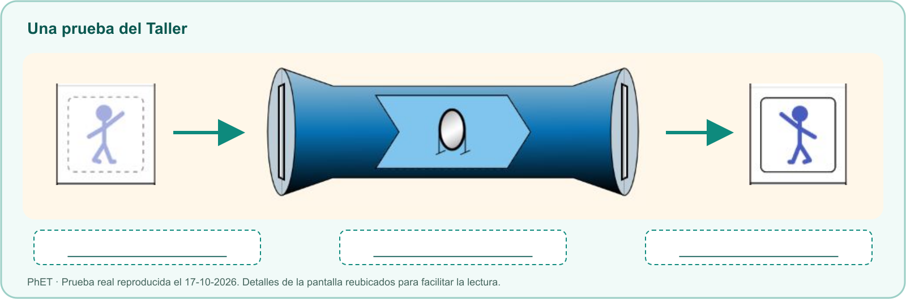
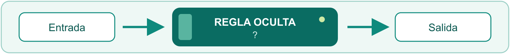

A. Personas y mes de nacimiento
A cada persona se le hace corresponder el mes en que nació.
Ana → marzo Bruno → marzo Carla → julio
Reino Matemático · Secuencia 9
De imágenes a números
Recuperamos oralmente lo observado en el Taller. Completa las etiquetas con el grupo.
a) Ubica estas etiquetas en los recuadros de la imagen:
ENTRADA · TRANSFORMACIÓN · SALIDA

b) Con una misma herramienta, ¿qué ocurría al introducir de nuevo la misma imagen?
c) ¿Dos imágenes diferentes podían dar la misma salida? Explica con un ejemplo de lo que observamos el martes.
Trabaja en dupla. Completa la tabla y las líneas de la regla. Responde las preguntas y escribe las explicaciones en la cuadernola.
Imagina una máquina con una regla oculta que se mantiene fija. Anota las salidas que observamos para 0, 3 y 5. Examina la tabla y anticipa las salidas para 8 y 10. Propón una regla y compruébala con todos los datos.

| Entrada | Salida |
|---|---|
| 0 | |
| 3 | |
| 5 | |
| 8 | |
| 10 | |
| 17 |
Regla que proponemos:
Regla revelada en la puesta en común:
a) Completa también la entrada que permitiría obtener 17 según tu regla. Explica cómo la encuentras y comprueba tu respuesta en la cuadernola.
b) Si se repite una entrada manteniendo esa regla, ¿pueden obtenerse dos salidas diferentes? Explica.
c) ¿Qué tienen en común esta máquina y las que trabajaban con imágenes?
Lee las tres situaciones. Los datos son ficticios y se muestran todas las correspondencias consideradas.
A cada persona se le hace corresponder el mes en que nació.
Ana → marzo Bruno → marzo Carla → julio
A cada pista se le hace corresponder su duración, tal como indica el reproductor. Se considera una versión determinada de cada canción.
Pista 1 → 3 min 20 s
Pista 2 → 3 min 20 s
Pista 3 → 4 min 05 s
Cada flecha relaciona una persona con un género musical que dice disfrutar. Las salidas consideradas son géneros musicales individuales.
Ana → cumbia Ana → rock
Bruno → pop Carla → rock
Escribe una explicación breve por situación en la cuadernola. Usa estas preguntas:
a) En cada situación, identifica qué se toma como entrada y qué como salida.
b) ¿Cada entrada tiene una salida? ¿Hay alguna entrada con dos salidas diferentes?
c) ¿Qué semejanzas y diferencias encuentras entre las tres situaciones en la manera de relacionar las entradas con las salidas?
¿Qué observamos sobre las salidas que corresponden a cada entrada?
¿Pueden entradas diferentes tener la misma salida?